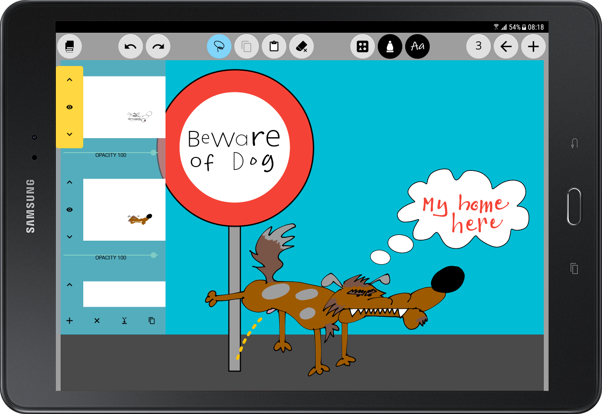
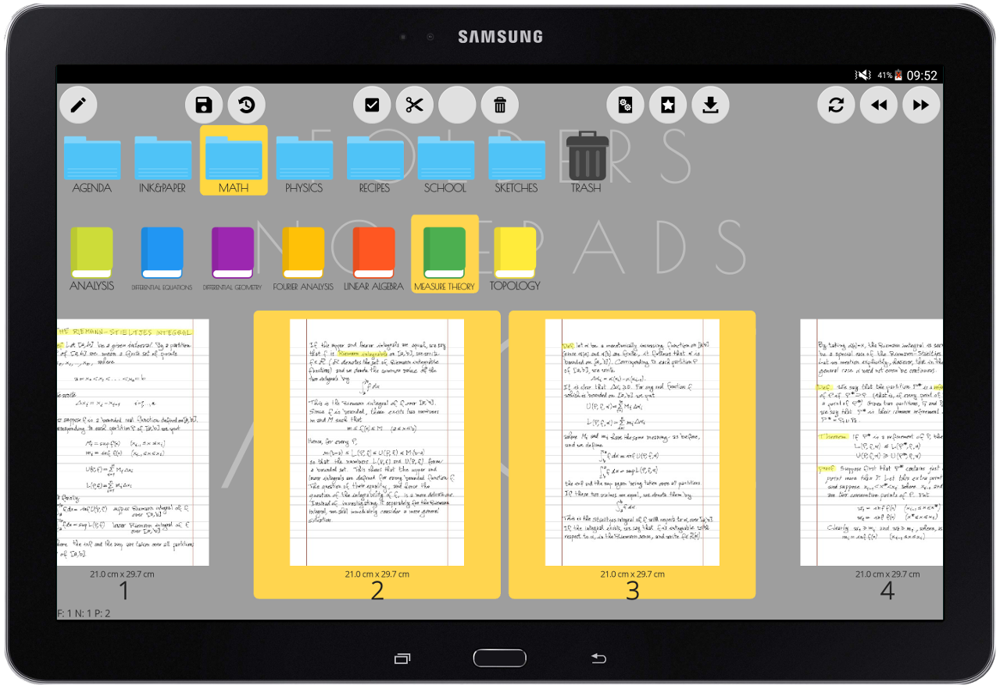

Write on your Android device smootly as you would with a pen on the paper. Seven different types of customizable
strokes will provide you a whole range of possibilities. The digital ink algorithm is entirely vector based:
your pages will never lose details.


Unleash your creativity by adding typedtexts and geometrical shapes to your manuscripts. The latter are
immediately recognized and can be modified through a versatile user interface. You may also need to import
external images: the supported formats are PDF (full vector based), PNG and JPEG. The images are embedded in the
document during the exportation process, always ensuring the best possible result.
Copy, cut, paste, zoom, rotate, flip, stretch any on-screen object, and use layers to achieve overlap and
transparency effects. With these tools, everything will be exactly as you want it.


Keep your notes organised in a library, grouping them into folders. Rotate, flip, replace the background and
choose the export area of any page. Move or copy pages from one notepad to another, or notepads from one folder
to another.
The trial version allows you to import and write on PDF, PNG, and JPEG files. By upgrading to the full version,
you will be able to export notes in the same formats, and create a backup copy of any library section.